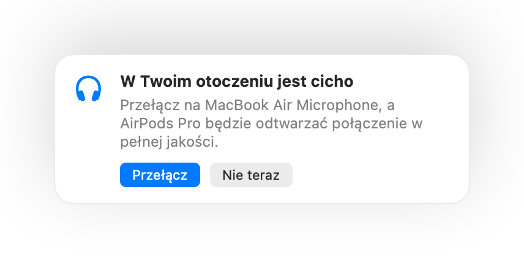

Naciśnij AirPods, aby wyciszyć
Podczas dowolnego połączenia naciśnij trzonek raz, aby wyciszyć, i ponownie, aby włączyć mikrofon. Działa to nawet w Chrome, gdzie Google Meet i inne połączenia w przeglądarce ignorują naciśnięcie AirPods.
Muffle na Maca
Naciśnij AirPods lub jeden skrót klawiszowy. Muffle wyłącza sam mikrofon, więc Google Meet, Zoom, Teams, Slack i wszystkie inne aplikacje słyszą ciszę.
Bezpłatny przez 3 dni. Potem jednorazowy zakup, bez subskrypcji. Dla systemu macOS 14 Sonoma i nowszych.
Wyciszaj, wybieraj mikrofon, blokuj jego poziom oraz włączaj i wyłączaj funkcje prosto z paska menu.
Muffle wycisza mikrofon na poziomie sprzętowym, więc nie ma znaczenia, która aplikacja, przeglądarka czy karta z niego korzysta.
Podczas dowolnego połączenia naciśnij trzonek. Muffle wyłącza sam mikrofon, więc Meet, Zoom, Teams i każda inna aplikacja nic nie słyszą.
Muffle rozpoznaje Twój głos i przypomina o tym, zanim wyjaśnisz cały swój pomysł nikomu.

Większość przycisków wyciszania działa tylko w jednej aplikacji. Muffle wyłącza sam mikrofon, dzięki czemu każda aplikacja na Twoim Macu słyszy ciszę.
Podczas dowolnego połączenia naciśnij trzonek raz, aby wyciszyć, i ponownie, aby włączyć mikrofon. Działa to nawet w Chrome, gdzie Google Meet i inne połączenia w przeglądarce ignorują naciśnięcie AirPods.
Zacznij mówić z wyciszonym mikrofonem, a Muffle Cię powiadomi, zanim wygłosisz cały pomysł w pustkę.

Skrót Control-Opcja-M wycisza mikrofon wszędzie, nawet gdy rozmowa toczy się w karcie w tle. Przytrzymaj go, aby mówić, gdy mikrofon jest wyciszony, i puść, aby wyciszyć go ponownie.
Niewielki ruchomy przycisk pokazuje stan mikrofonu podczas połączeń. Kliknij go, aby wyciszyć lub włączyć mikrofon.

Wybierz sposób działania skrótu: naciśnij, aby przełączyć, przytrzymaj, aby mówić, lub przytrzymaj, aby wyciszyć kaszel. Dodaj osobne klawisze wyciszania i włączania albo przytrzymaj jeden klawisz, taki jak prawy ⌥ lub dodatkowy przycisk myszy.

Włączasz mikrofon, aby powiedzieć jedną rzecz? Jeśli potem zamilkniesz na wybrany czas, Muffle ponownie go wyciszy. Liczy się tylko Twój głos, a nie pisanie na klawiaturze czy hałas w tle.
Gdy używasz AirPods w cichym pomieszczeniu, Muffle sugeruje mikrofon Maca, dzięki czemu AirPods odtwarzają połączenie w pełnej jakości. Gdy zrobi się głośno, proponuje mikrofon AirPods.

Chrome, Zoom i Teams potrafią same zmieniać poziom mikrofonu. Zablokuj go, a Muffle przywróci właściwe ustawienie.
Rozpoczynaj każde połączenie z wyciszonym mikrofonem, włączaj mikrofon ponownie po zakończeniu rozmowy i wyciszaj go po zablokowaniu Maca.

Jeśli Twoje słuchawki rozłączą się w trakcie rozmowy, Muffle wyciszy dźwięk, zanim aplikacja przełączy się na mikrofon Maca i wyśle dźwięki z całego pokoju.
Wyciszaj z aplikacji Skróty, przez Siri, ze Stream Decka, z Raycast lub za pomocą przycisku w Centrum sterowania.
Zielona lub czerwona poświata wokół ekranu, kolorowa ikona na pasku menu, pływający przycisk oraz dźwięk, który możesz wyłączyć dla każdego mikrofonu. Włącz te wskaźniki, które najbardziej Ci odpowiadają.
Muffle nigdy nie nagrywa, nie przechowuje ani nie wysyła dźwięku. Jedynie włącza i wyłącza mikrofon oraz odczytuje poziom jego głośności. Żadnych kont, żadnej analityki i żadnego śledzenia.
Zainstaluj Muffle z Mac App Store i zezwól na dostęp do mikrofonu.
Dołącz do rozmowy w dowolnej aplikacji, tak jak zwykle.
Naciśnij AirPods, naciśnij Control-Opcja-M lub kliknij ikonę na pasku menu, aby wyciszyć mikrofon.
Tak. Chrome nie przekazuje naciśnięcia AirPods do połączeń w przeglądarce, dlatego Muffle je przechwytuje i wycisza sam mikrofon. To samo dotyczy każdej rozmowy w karcie przeglądarki.
Aplikacja do połączeń może nadal pokazywać włączony mikrofon, ponieważ Muffle wyłącza fizyczny mikrofon, a nie przycisk w aplikacji. Uczestnicy i tak słyszą ciszę. Gdy mikrofon jest wyciszony, ikona Muffle na pasku menu zmienia kolor na czerwony.
AirPods Pro, AirPods 3 i nowsze oraz AirPods Max, a także modele Beats obsługujące sterowanie połączeniami. Skrót klawiszowy i pasek menu działają z każdym mikrofonem.
Tak. Muffle działa z każdą aplikacją na Macu korzystającą z mikrofonu, zarówno z programami biurkowymi, jak i połączeniami w przeglądarce.
Nie. Wypróbuj wszystkie funkcje bezpłatnie przez 3 dni, a potem odblokuj Muffle jednorazowym zakupem.
macOS przekazuje naciśnięcie AirPods tylko aplikacjom, które korzystają z mikrofonu, dlatego Muffle utrzymuje ciche połączenie podczas rozmów. Nic nie jest nagrywane.
Muffle włącza mikrofon ponownie przy zamykaniu, więc nie pozostaniesz bez głosu.
macOS 14 Sonoma i nowsze. Przycisk w Centrum sterowania wymaga systemu macOS 26 lub nowszego.
Tak. Wybierz opcję „Przytrzymaj, aby mówić” w Ustawieniach i przytrzymaj skrót klawiszowy, aby zabrać głos. Możesz też przytrzymać pojedynczy klawisz, taki jak prawy ⌥ lub fn, albo dodatkowy przycisk myszy.
Gdy aplikacja korzysta z mikrofonu AirPods, słuchawki przełączają się w tryb połączenia, który odtwarza dźwięk w niższej jakości. W cichym pomieszczeniu Muffle sugeruje mikrofon Maca, dzięki czemu AirPods zachowują pełną jakość dźwięku.
Nie. Muffle rozpoznaje mowę dzięki analizie dźwięku Apple wykonywanej na urządzeniu, więc liczy się tylko mówienie. Pisanie na klawiaturze, kliknięcia i hałas w tle się nie liczą, a nic nie jest nagrywane.
Krótkie, praktyczne wskazówki dotyczące wyciszania mikrofonu na Macu w każdej aplikacji.
Możesz wypróbować Muffle bezpłatnie przez 3 dni.